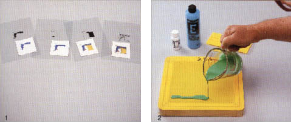
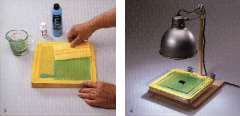
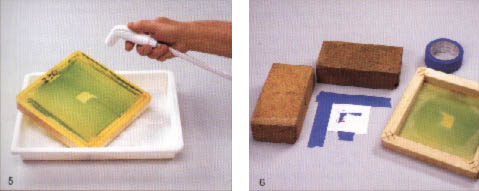
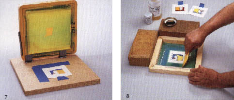
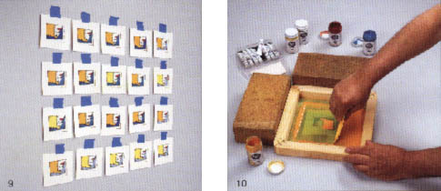
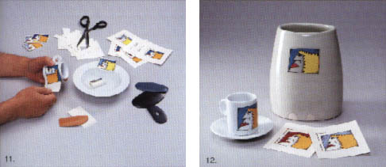

|
Previous
Enhancing Images with
Decals
Article by Harriet
Gamble on Rimas VisGirda's decal method (continued)
Originally published in Ceramics
Art & Perception.
Rimas VisGirda’s Decal Process for Ceramics
As with most technical processes, careful preparation and the right
tools are crucial to a successful outcome. First, VisGirda creates
or selects an image to print and transfers it to a transparency.
This can be made at a copy centre or by printing it from a computer
using a laser printer on special laser printer transparencies. An
image with clear lines and minimal fills prints to decal better
than one with shading. The image on the transparency should be small
enough so that there is a 2.5 cm (1in) margin around it on the decal
paper.
Photo 1
Four acetate transparencies (one for each colour) with completed
steps of decal.
Photo 2
A bead of emulsion mix (e.g. see PDF product sheet: Dirasol
Supercoat 916) is applied at the left end of the screen.

Photo 3
The emulsion is spread to the right with a squeegee. A uniform coating
of the emulsion is necessary.
Photo 4
The transparency is sandwiched between the screen and a piece of
glass. Using a clamp light with a 200-watt bulb, the screen is exposed
for 12 minutes.

Photo 5
The screen is washed immediately and gently under cold water. When
the image turns light blue, increase the water pressure to be sure
all the emulsion is washed out of the screen. The screen must be
totally dry before continuing.
Photo 6
Using two 12.5 cm (5 in) strips of masking tape and two bricks,
VisGirda first creates a 90 degree angle (inverted, upside down
L) with the tape. He layers the masking tape to serve as an edge
for the decal paper. With the decal paper in place against the masking
tape edge, he places the screen over the paper and positions the
image over the centre of the paper. Holding the screen secure, the
bricks are placed against the edge of the positioned screen to ensure
accurate registration.

Photo 7
A commercial base with a special hinge that has adjustable clamps
for the screen can also be used to ensure accurate registration.
Photo 8
A thick bead of china paint is placed along the bottom of the screen
– the width of the image. Using the squeegee, VisGirda loads the
screen, lightly drags the paint bead up and over the image. With
the screen positioned over the decal paper (the bricks are used
as the registration guide), he reverses the squeegee, holding it
at a 45-60 degree angle to the table. He presses firmly down and
pulls the paint across the screen.

Photo 9
The prints are taped on to a wall to dry between each application
of colour.
Photo 10
VisGirda applies the cover coat – an organic material that holds
the china paint together. The cover coat is applied through a clean,
coarse screen with a squeegee so that the image is completely coated.
The decals should be allowed to dry thoroughly.

Photo 11
The dry decals are now ready to be transferred to the ceramic piece.
VisGirda recommends cutting the decal so that there is a 3 mm (1/8
in) border around the image. The decal is soaked in water, removed
from the paper, and positioned on to the ceramic piece. He uses
a soft rubber rib to smooth the decal – working from the centre
of the decal out to the edges. Removing any excess water and air,
VisGirda lets each decal dry for at least an hour before applying
another one to the same piece.
Photo 12
When the decals are completely dry (overnight), he fires the pieces.
High fire porcelain and stoneware pieces are fired to cone 016 to
018. Low fire pieces are fired to cone 018 to 019.

Harriet Gamble is a freelance writer and the author of more than
70 published magazine articles on art, artists and art education.
Rimas VisGirda uses equipment and supplies from American Art Clay
Co Inc. A detailed technique sheet on this process is available
by writing or calling AMACO®, 4717 West Sixteenth Street, Indianapolis,
Indiana 46168, 800.364.1600.
More Articles
|